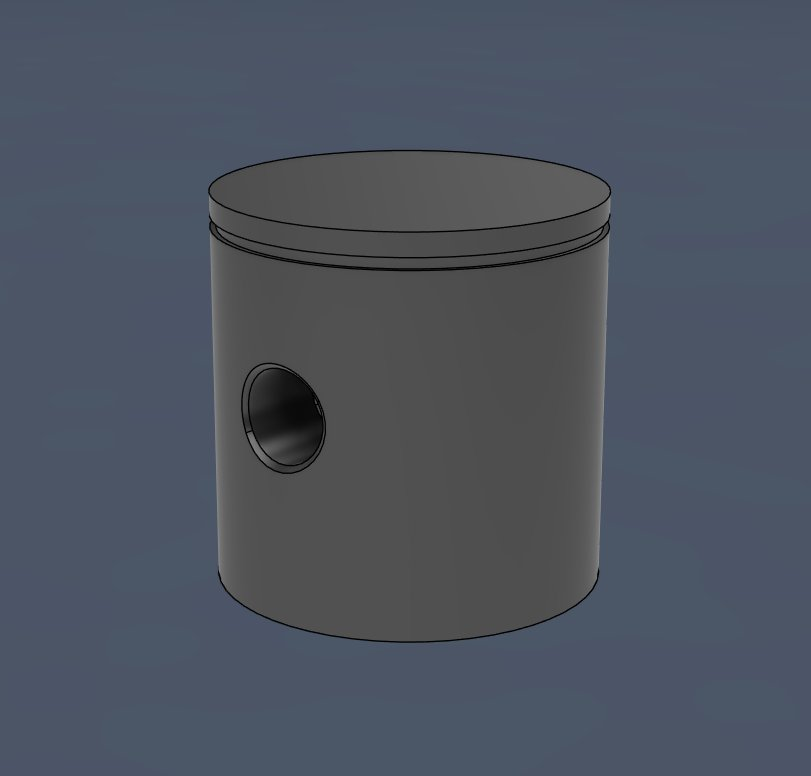
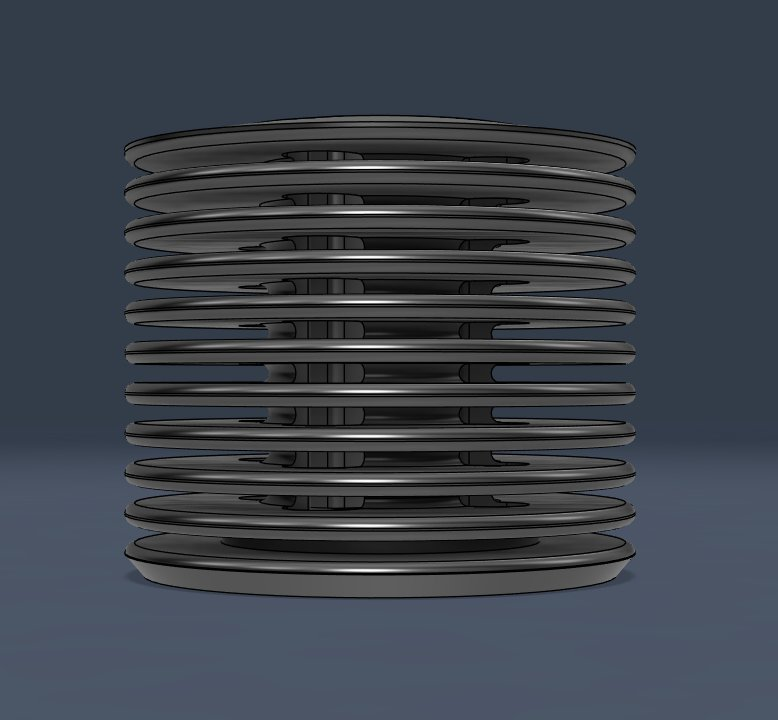
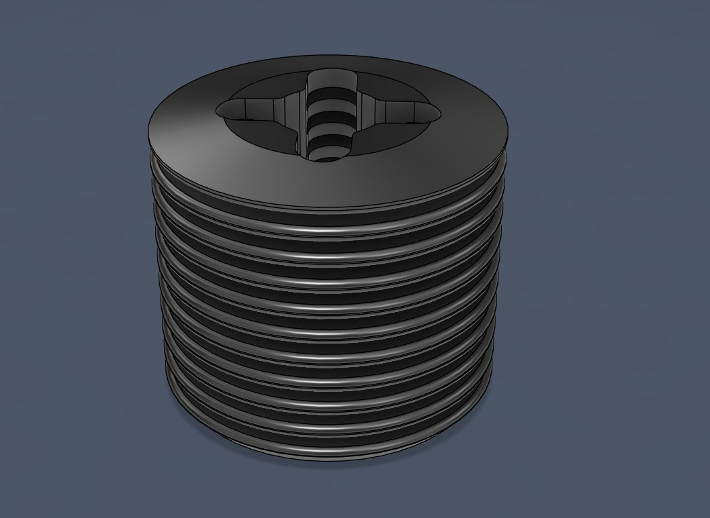

Selected Projects
Design and deliver two flagship window installations for Selfridges Oxford Street — one featuring synchronised CGI media screens, the other a dynamic fan-driven sail effect.
All electronics to be delivered in-house, eliminating the need for external AV contractors. Installation environment was constrained — no welding permitted on site.
- Designed 40×40mm powder-coated aluminium L-angle framework with CNC-machined hole pattern at 50mm spacing
- Designed custom fan mounting brackets and structural corner brackets — fully dimensioned for in-house manufacture
- Specified M8 flanged fastener positions for on-site assembly
- FR clear coat specified on all plywood elements per public-installation fire-compliance requirements
- 6× 240V industrial fans controlled via Arduino 8-channel relay — relay selected to isolate signal voltage from mains load, programmed via the Arduino IDE
- Raspberry Pi media units with staggered startup sequences for synchronised CGI playback across all screens
#include <multi_channel_relay.h> /** Channel layout: * Set 1: Fans 1, 2, 3 * Set 2: Fans 4, 5, 6 * Sequential activation creates sail wave effect */ #define DEBUG_PRINT Serial Multi_Channel_Relay relay; void setup() { DEBUG_PRINT.begin(9600); while (!DEBUG_PRINT); relay.begin(0x11); DEBUG_PRINT.println("Relay control initialized."); randomSeed(analogRead(A0)); } void loop() { DEBUG_PRINT.println("Starting both fan sets in parallel..."); // Activate both sets simultaneously, one fan at a time for (int i = 0; i < 3; i++) { int fanSet1 = i + 1; // Fans 1, 2, 3 int fanSet2 = i + 4; // Fans 4, 5, 6 relay.turn_on_channel(fanSet1); relay.turn_on_channel(fanSet2); delay(5000); // 5s between activation steps } delay(5000); // Hold all fans on // Sequential shutdown for (int i = 0; i < 3; i++) { int fanSet1 = i + 1; int fanSet2 = i + 4; relay.turn_off_channel(fanSet1); relay.turn_off_channel(fanSet2); delay(5000); } delay(5000); // Wait before cycle repeats }


Design a flexible modular display system deployable across three campaigns and 11 store formats across Europe.
The system needed to accommodate shoes, boots, bags, clothing and LED elements — and be installed independently by non-technical store teams across five countries with no engineering support on site.
- Designed proprietary family of 13 CNC-machined aluminium components from scratch
- 4-way clamping connector with 0.2mm interference fit on 15.88mm aluminium round bar
- Pivot connector with 120° rotation limit and 1.5mm rubber damping washer
- Height-adjustable tube attachments for light bars, plates and bag straps
- Tolerances validated through iterative FDM prototyping with shrinkage compensation before CNC release
- Integrated 24V COB LED lighting system — 11.2Wp/m, IP20, 4000K colour temperature
- 3D printed transparent PETG snap-fit cable clips for clean wire management on verticals
- Banner retention system using 4mm steel cable crimps and machined aluminium weights
- 15.88mm aluminium round bar — 4 lengths: 150, 300, 600, 1200mm
- 2 bar types: slotted base bars and threaded vertical bars
- 13 unique machined components — all fully dimensioned for manufacture
- M6 fastener system throughout
- 5mm aluminium L-plate and flat plate shelf attachments
- 100W 24V LED driver specified and documented
Produced a visual step-by-step assembly instruction pack in Adobe Illustrator using CAD-derived artwork — structured as an IKEA-style guide enabling tool-independent installation by store teams across different countries and languages.
Full manufacturing drawing package produced for each of the 13 components, including tolerances, material specs, and finish requirements.


Founded and independently operated a simracing hardware product business, taking a full hardware range of 10 SKUs from concept through to manufactured output — managing design, prototyping, manufacturing, quality control, and customer delivery as sole engineer and director.
Ran a concurrent venture producing aftermarket lighting components for Sherco and Beta motorcycles — involving 3D scanning of original components, surface modelling, and hands-on electronics wiring.
- Designed all products in Fusion 360 using iterative design principles
- Rapid prototyping via 3D printing to validate form, fit and function
- 3D scanning of original motorcycle components for surface model derivation
- Hands-on electronics wiring and component sourcing
- Complete technical documentation packages for each product
- Managed full commercial operation under real market deadlines
Reverse-engineered a single-cylinder nitro RC engine from physical parts into parametric CAD assemblies using Fusion 360 and CATIA. Modelled the piston, finned cylinder liner, cylinder head, crankcase, and carburetor intake.
Currently completing crankcase internals before producing section views and dimensioned drawings with GD&T callouts.
- Disassembled physical engine and captured dimensions from each component for parametric reconstruction
- Modelled piston, finned cylinder liner, cylinder head, crankcase and carburetor intake as individual parametric bodies
- Assembled components with mating constraints to validate clearances and concentricity
- Cross-tooled between Fusion 360 and CATIA V5 to build fluency in both parametric environments
- Crankcase internals in progress — section views and fully dimensioned drawings with GD&T callouts to follow


